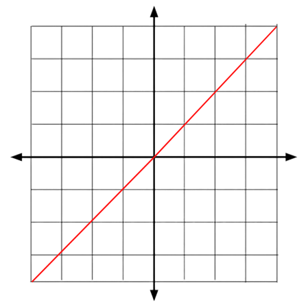
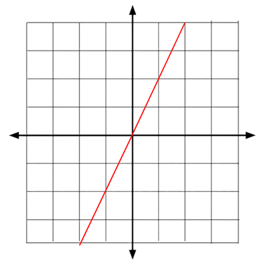

Constant of Proportionality
Introduction
The constant of proportionality is a fixed value that is present within the relationship between two variables. Some of the formulas used to find a specific value have a constant of proportionality...
a = l * w
f = ma
y = kx
When two variables increase/decrease at the same rate, they have a proportional relationship, this is where the constant of proportionality is seen. It can also be thought of a ratio between the two variables. When two variables are proportional, they are shown as this...
y ∝ x & x ∝ y
This basically means, "y is directly proportional to x.
Direct Variation
A direct variation is a proportional linear relationship between two variables, meaning that as one changes, the other changes at the same rate...

An example may be...
| X |
Y |
| 0 |
0 |
| 1 |
2 |
| 2 |
4 |
| 4 |
8 |
| 6 |
12 |
| 10 |
20 |
So from this table, we can see that as x increases, y increases proportionally or at the same rate as x...
y1 = 2(1)
y2 = 2(2)
y3 = 2(3)
y4 = 2(4)
y1 = 2
y2 = 4
y3 = 6
y4 = 8
Then we can divide both sides by x to get the equation...
Then we can use this formula to find the constant of proportionality by plugging in one set of values (one x value with it's y value)...
k = y / x
k = 2 / 1
k = 2
So from using the equation k = y /x, we get k = 2 which means that the constant of proportionality is 2...
y = 2x

Inverse Variation
An inverse variation is also a proportional relationship between two variables (x and y) but instead of two variables increasing as the other does, in an inverse variation, when one variable increases, the other tends to decrease...
 Examples may include the formula for speed where distance is constant, where as time increases, the average speed decreases...
Examples may include the formula for speed where distance is constant, where as time increases, the average speed decreases...
An example is...
| A Track & Field Race |
| Distance (m) |
Time (s) |
Runners (#) |
| 100 |
10 |
1 |
| 100 |
5 |
2 |
| 100 |
20 |
3 |
| 100 |
15 |
4 |
| 100 |
12 |
5 |
| 100 |
18 |
6 |
Let's calculate the average speed for every runner...
So as the time to complete the 100-meter dash gets longer, the average speed of the runner goes down. This is an example of inverse variation.